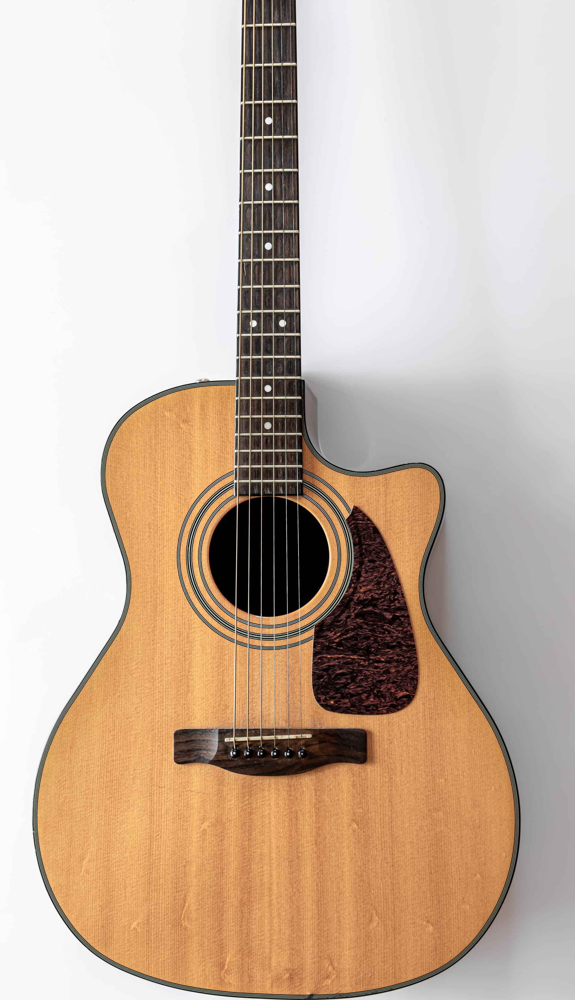

Tipps, Tricks und Wissenswertes rund um die Musik
Meine neuesten Beiträge
Willkommen in meinem Musikblog! Hier teile ich mein Wissen, meine Erfahrungen und praktische Tipps rund um das Musiklernen. Egal ob du gerade erst anfängst oder schon fortgeschritten bist – hier findest du wertvolle Impulse für deinen musikalischen Weg. Von Übetechniken über Instrumentenwahl bis hin zu Motivationstipps und Equipment-Empfehlungen. Viel Spaß beim Stöbern!

Musikalische Früherziehung: Warum Musikkurse für Kinder so wertvoll sind
Wie Musik die kindliche Entwicklung fördert und der spielerische Einstieg gelingt.
Weiterlesen
Gitarrenunterricht Karlsruhe: 5 Vorteile eines mobilen Musiklehrers
Entspannter lernen ohne Fahrstress – so funktioniert der Musikunterricht als Heimservice.
Weiterlesen
10 Tipps zum Dranbleiben
Musiklernen ist ein Marathon, kein Sprint. Motivation behalten und langfristig am Ball bleiben.
Weiterlesen
Was für ein Musiker wäre ich gerne? – Quiz
Finde in 9 Fragen deinen Musik-Typ – vom Virtuosen bis zur Slap-Legende.
Quiz starten
Metronom: Dein bester Freund
Timing ist alles! Erfahre, warum das Üben mit einem Metronom dein Spiel auf das nächste Level bringt.
Weiterlesen
Die 5 ersten Gitarren-Akkorde
Mit nur fünf Akkorden kannst du hunderte Songs spielen! Lerne Em, Am, C, G und D.
Weiterlesen
Akkord-Übersicht (Interaktiv)
Alle wichtigen Akkorde mit Grifftabellen. Wähle eine Tonart und sieh sofort die Griffweise.
Zu den AkkordenSkalen & Tonleitern (Interaktiv)
Lerne die wichtigsten Gitarren-Skalen (wie Pentatonik) auf dem kompletten Griffbrett.
Zu den SkalenMusik lernen im Alter
Es ist nie zu spät! Warum Musik im Alter besonders wertvoll ist und wie du den perfekten Einstieg findest.
Weiterlesen
Musiktheorie Basics
Intervalle, Tonleitern, Akkorde kompakt erklärt, damit du schneller Fortschritte machst.
Weiterlesen
Häufigste Fehler beim Lernen
Typische Anfängerfallen bei Haltung, Rhythmus und Motivation erkennen und vermeiden.
WeiterlesenDu hast Fragen oder Themenvorschläge?
Gibt es ein Thema, über das du gerne mehr erfahren möchtest? Schreib mir – ich freue mich über deine Anregungen!